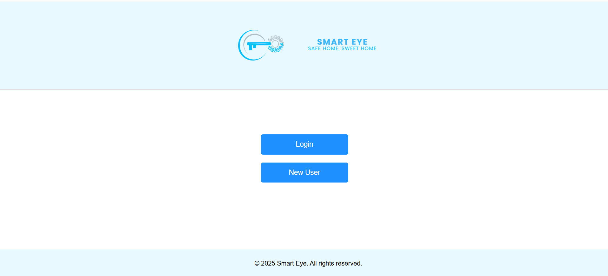
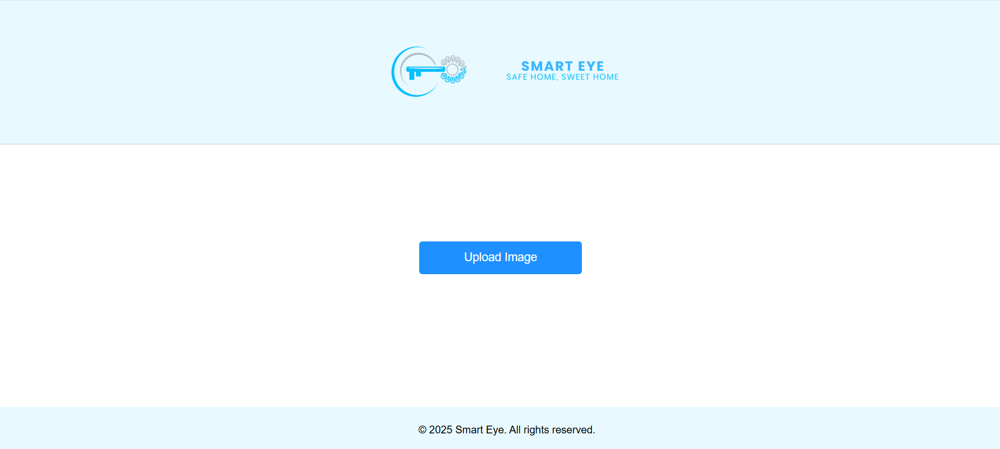
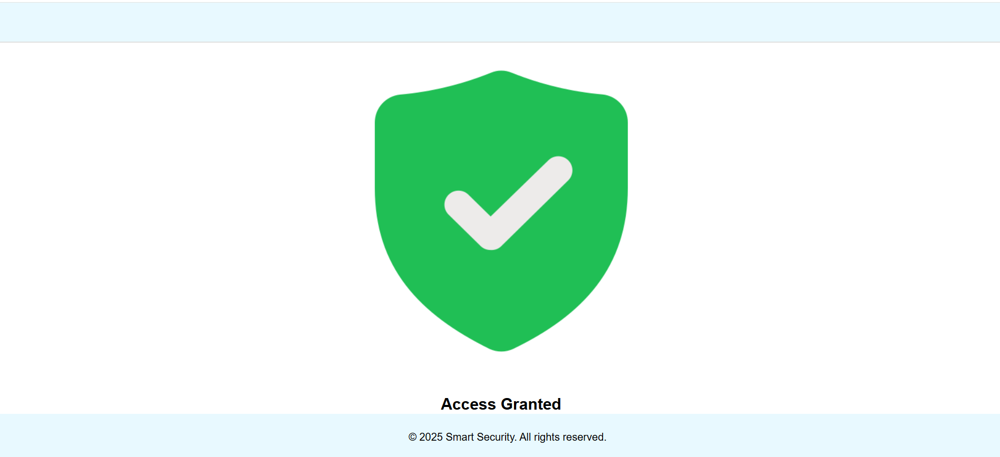
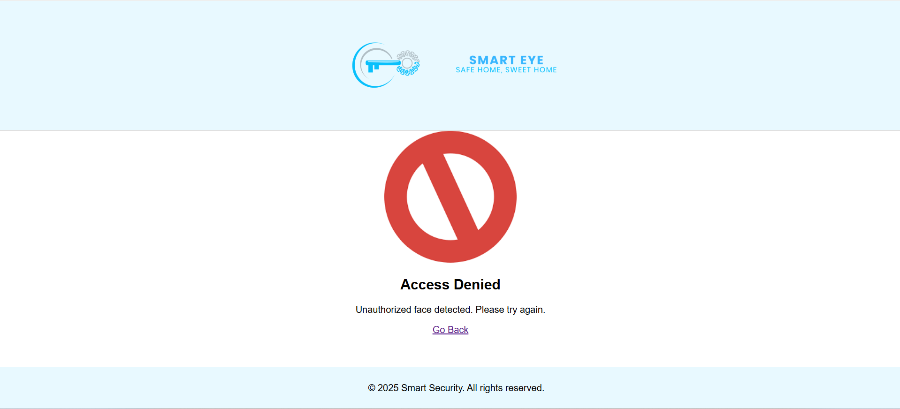

Face Login System
This project is a web based face authentication system, built using Flask and OpenCV
Tech Stack
- Frontend: HTML, CSS
- Backend: Python, Flask
- Database: SQLite
- Face Recognition: Numpy, OpenCV, Face Recognition Library
Screenshots




Features
- User Registration - Face images are captured and stored in the database.
- Login Attempt - The system detects a face when a user tries to log in.
- Face Matching - Compares the detected face with stored data.
- Authentication Result - Grants access if a match is found; otherwise, denies login.